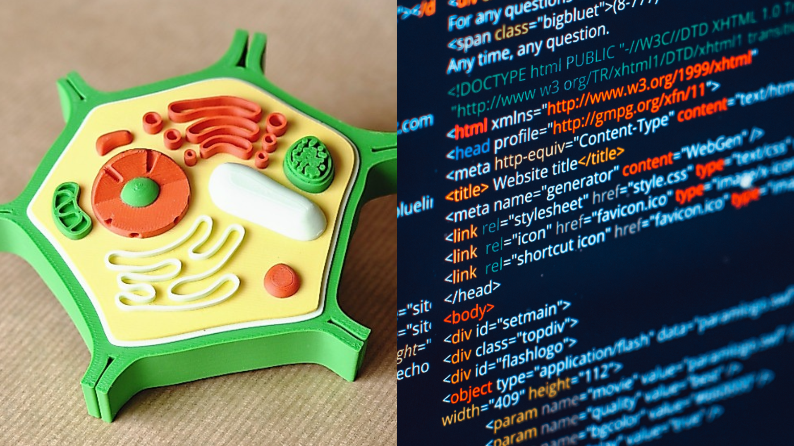

Nosso trabalho consiste no desenvolvimento de uma maquete representativa de uma célula
vegetal feita com materiais recicláveis, acompanhada de um site informativo em formato HTML.
O projeto tem como objetivo apresentar, de maneira visual e didática, as principais estruturas
que compõem esse tipo de célula, facilitando a compreensão de suas características e funções.

Inicialmente, organizamos os materiais necessários para a construção da maquete
e definimos como cada estrutura da célula seria representada. Em seguida, começamos a confeccionar e montar os
componentes celulares, buscando diferenciar suas formas, cores e posições para facilitar a identificação de cada organela.
Após a preparação das peças, realizamos a montagem da maquete, organizando as estrturas de acordo com a representação
de uma célula vegetal. Por fim, desenvolvemos este site em HTML com o intuito de apresentar o projeto, os materiais utilizados e
as etapas de construção